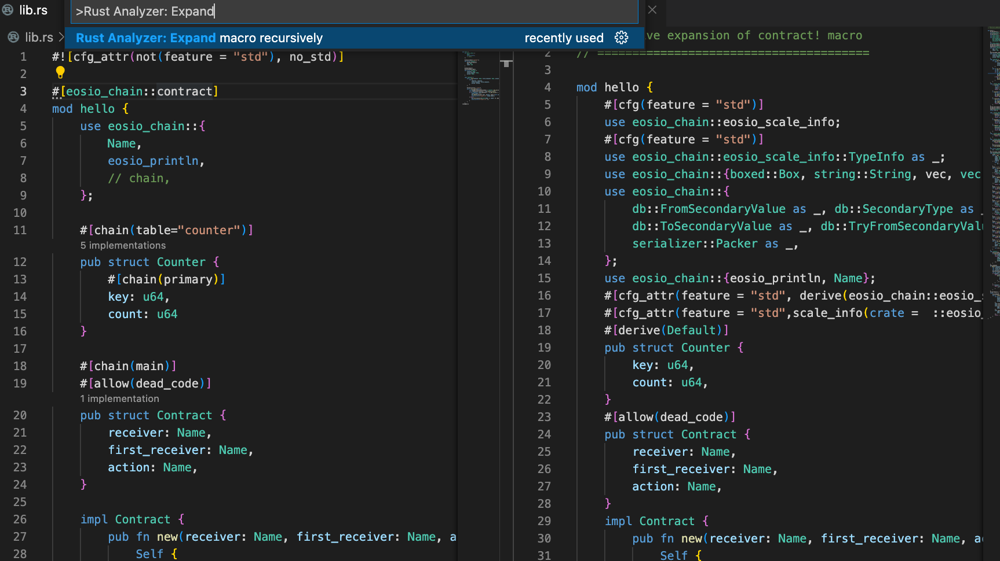

Setup Development Environment
Install Rust
curl --proto '=https' --tlsv1.2 -sSf https://sh.rustup.rs | sh -s -- -y
Activate the new PATH environment.
source $HOME/.cargo/env
Install Nightly Rust
rustup toolchain install nightly --component rust-src
Install binaryen
- Install
binaryenin a version >= 99:- Debian/Ubuntu:
apt-get install binaryen - Homebrew:
brew install binaryen - Arch Linux:
pacman -S binaryen - Windows: binary releases are available
- Debian/Ubuntu:
Create a Virtual Python Env for Testing
python3 -m venv ~/env
source ~/env/bin/activate
python3 -m pip install --upgrade pip
Next time you want to use the test environment, just run the following command again.
source ~/env/bin/activate
Install Eos Test Framework
python3 -m pip install ipyeos
Install Rust Smart Contracts Builder
python3 -m pip install rust-contracts-builder
Install Python Toolkit for EOS
python3 -m pip install pyeoskit
pyeoskit is used to deploy contracts.
Checking Environment
Create a new rust contract project:
rust-contract init hello
Build
cd hello
./build.sh
Test
./test.sh
If you see the following output, that means everything have been installed successfully.
test.py debug 2022-07-04T04:01:58.496 ipyeos apply_context.cpp:36 print_debug ]
[(hello,inc)->hello]: CONSOLE OUTPUT BEGIN =====================
count is 1
[(hello,inc)->hello]: CONSOLE OUTPUT END =====================
debug 2022-07-04T04:01:58.498 ipyeos apply_context.cpp:36 print_debug ]
[(hello,inc)->hello]: CONSOLE OUTPUT BEGIN =====================
count is 2
[(hello,inc)->hello]: CONSOLE OUTPUT END =====================
.
============================== 1 passed in 0.90s ===============================
Hello World
This chapter will guide you to write an EOS Smart Contract. In this chapter you will learn to:
- Write a simple contract
- Build a contract
- Generating an ABI file for contract
- Testing a contract
- Deploying a contract to EOS network
- Interacting with a contract on chain
Source Code
Use the following command to create an initial project.
rust-contract init helloworld
Replace helloworld/lib.rs with the following source code:
#![allow(unused)] #![cfg_attr(not(feature = "std"), no_std)] fn main() { #[eosio_chain::contract] mod hello { use eosio_chain::{ Name, eosio_println, }; #[chain(main)] #[allow(dead_code)] pub struct Hello { receiver: Name, first_receiver: Name, action: Name, } impl Hello { pub fn new(receiver: Name, first_receiver: Name, action: Name) -> Self { Self { receiver: receiver, first_receiver: first_receiver, action: action, } } #[chain(action="sayhello")] pub fn say_hello(&self, name: String) { eosio_println!("++++hello", name); } } } }
Build
rust-contract build
The above command will generate a wasm file and an ABI file located in the current target directory
Testing
Testing code
Save the following code as test.py
import os
import sys
import json
import struct
import pytest
test_dir = os.path.dirname(__file__)
sys.path.append(os.path.join(test_dir, '..'))
from ipyeos import log
from ipyeos import chaintester
from ipyeos.chaintester import ChainTester
chaintester.chain_config['contracts_console'] = True
logger = log.get_logger(__name__)
def update_auth(chain, account):
a = {
"account": account,
"permission": "active",
"parent": "owner",
"auth": {
"threshold": 1,
"keys": [
{
"key": 'EOS6AjF6hvF7GSuSd4sCgfPKq5uWaXvGM2aQtEUCwmEHygQaqxBSV',
"weight": 1
}
],
"accounts": [{"permission":{"actor":account,"permission": 'eosio.code'}, "weight":1}],
"waits": []
}
}
chain.push_action('eosio', 'updateauth', a, {account:'active'})
def init_chain():
chain = chaintester.ChainTester()
update_auth(chain, 'hello')
return chain
chain = None
def chain_test(fn):
def call(*args, **vargs):
global chain
chain = init_chain()
ret = fn(*args, **vargs)
chain.free()
return ret
return call
class NewChain():
def __init__(self):
self.chain = None
def __enter__(self):
self.chain = init_chain()
return self.chain
def __exit__(self, type, value, traceback):
self.chain.free()
test_dir = os.path.dirname(__file__)
def deploy_contract(package_name):
with open(f'{test_dir}/target/{package_name}.wasm', 'rb') as f:
code = f.read()
with open(f'{test_dir}/target/{package_name}.abi', 'rb') as f:
abi = f.read()
chain.deploy_contract('hello', code, abi)
@chain_test
def test_hello():
deploy_contract('helloworld')
args = {
'name': 'rust'
}
r = chain.push_action('hello', 'sayhello', args, {'hello': 'active'})
logger.info('++++++elapsed: %s', r['elapsed'])
chain.produce_block()
Run the test code
run-ipyeos -m pytest -s -x test.py -k test_hello
Deploying
Create a test account
https://monitor.jungletestnet.io/#account
Receive some test token
https://monitor.jungletestnet.io/#faucet
Get Some Free CPU Resource
https://monitor.jungletestnet.io/#powerup
Deploy the Contract and Call Action on Chain
Use the following code to deploy the test contract and interact with the test contract with sayhello action.
Change private key and test_account as demand.
#{
# 'private': '5Hzw656H9s9KUjqPXrSqtHtWVw4VV1YVF2VbKrTUXe65GsYwQgq',
# 'public': 'EOS57ijzHFYRf7ibbfVdzSHN2mzyC8bgrGNDdM4DWPS8XBp39vniX'
# }
import json
import base64
from pyeoskit import eosapi, wallet
eosapi.set_node('https://jungle3.cryptolions.io:443')
wallet.import_key('test', '5Hzw656H9s9KUjqPXrSqtHtWVw4VV1YVF2VbKrTUXe65GsYwQgq')
test_account = 'rusttesttest'
with open('./target/helloworld.wasm', 'rb') as f:
wasm = f.read()
with open('./target/helloworld.abi', 'r') as f:
abi = f.read()
info = eosapi.get_account(test_account)
ram_quota = info['ram_quota']
if len(wasm) * 10 + 4000 > ram_quota:
ram_bytes = len(wasm) * 10 + 4000 - ram_quota
print('ram_bytes:', ram_bytes)
ram_bytes += 1000
args = {
'payer': test_account,
'receiver': test_account,
'bytes': ram_bytes,
}
eosapi.push_action('eosio', 'buyrambytes', args, {test_account: 'active'})
code = eosapi.get_raw_code_and_abi(test_account)['wasm']
if not base64.standard_b64decode(code) == wasm:
eosapi.deploy_contract(test_account, wasm, abi)
r = eosapi.push_action(test_account, 'sayhello', {'name': 'rust'}, {test_account: 'active'})
print(r['processed']['elapsed'])
print(r['processed']['action_traces'][0]['console'])
Full Example
rust-analyzer
rust-analyzer is a Visual Studio Code extension, it provides support for the Rust programming language
In order to let rust-analyzer support for EOS smart contracts develop well, switch rust default toolchain to stable.
rustup default stable
In order to view the code generate by eosio_chain::contract macro, use Rust Analyzer: Expand macro recursively
Hint: if you have installed
rust-analyzerwith nightly toolchain as default, please disable and then enable it again, otherwise macro expandsion won't work.
Run the following command to check the current rust toolchain
rustup default
This is what the code after expanding looks like:

Inline Action
An inline action initiates by contract code. Since EOS contracts does not support synchronized call to other contracts currently, inline action is the only way contracts can interact with each other.
Code Example
#![allow(unused)] #![cfg_attr(not(feature = "std"), no_std)] fn main() { #[eosio_chain::contract] mod inline_action_example { use eosio_chain::{ Name, action::{ Action, PermissionLevel, }, name, ACTIVE, eosio_println, }; #[chain(packer)] struct SayGoodbye { name: String } #[chain(main)] pub struct Contract { receiver: Name, first_receiver: Name, action: Name, } impl Contract { pub fn new(receiver: Name, first_receiver: Name, action: Name) -> Self { Self { receiver: receiver, first_receiver: first_receiver, action: action, } } #[chain(action = "sayhello")] pub fn say_hello(&self, name: String) { eosio_println!("hello", name); let perms: Vec<PermissionLevel> = vec![PermissionLevel{actor: name!("hello"), permission: ACTIVE}]; let say_goodbye = SayGoodbye{name: name}; let action = Action::new(name!("hello"), name!("saygoodbye"), &perms, &say_goodbye); action.send(); } #[chain(action = "saygoodbye")] pub fn say_goodbye(&self, name: String) { eosio_println!("goodbye", name); } } } }
Testing Code
deploy_contract('inlineaction')
args = {'name': 'bob'}
r = chain.push_action('hello', 'sayhello', args)
logger.info('+++++++create elapsed: %s', r['elapsed'])
chain.produce_block()
The test code can be found in examples/test.py.
In this example, the test code initiates a sayhello action with the name bob, which prints hello bob to the console,
meanwhile, the sayhello action sends a saygoodbye action to the same contract which prints goodbye bob to the console.
The account needs to have an eosio.code permission to send an inline action. Below is the script that adds eosio.code permission to a contract account.
def update_auth(chain, account):
a = {
"account": account,
"permission": "active",
"parent": "owner",
"auth": {
"threshold": 1,
"keys": [
{
"key": 'EOS6AjF6hvF7GSuSd4sCgfPKq5uWaXvGM2aQtEUCwmEHygQaqxBSV',
"weight": 1
}
],
"accounts": [{"permission":{"actor":account,"permission": 'eosio.code'}, "weight":1}],
"waits": []
}
}
chain.push_action('eosio', 'updateauth', a, {account:'active'})
See Also
DBI64
#![allow(unused)] fn main() { pub struct DBI64<T> where T: Packer + PrimaryValueInterface + Default, { /// pub code: u64, /// pub scope: u64, /// pub table: u64, _marker: core::marker::PhantomData<T>, } }
DBI64 represents an on-chain key-value database with u64 as key and stores variable lengths of data.
New
#![allow(unused)] fn main() { pub fn new(code: Name, scope: Name, table: Name) -> Self }
Creates a new DBI64 instance
Store
#![allow(unused)] fn main() { pub fn store(&self, key: u64, value: &T, payer: Name) -> Iterator<T> }
Store a value indexed by the key. payer specifies account to pay the RAM resources.
VM throws an exception that can't catch by contract code if there is already a value with the key that exists in the database.
The following example code shows how to check if a value with the key already exists.
#![allow(unused)] fn main() { let it = db.find(key); if !it.is_ok() { //create a new value //let value = ... db.store(key, &value, payer); } else { let mut value = it.get_value(); // modify value // ... db.update(it, &value, payer); } }
Find
#![allow(unused)] fn main() { pub fn find(&self, key: u64) -> Iterator<T> }
Find value by primary key
Update
#![allow(unused)] fn main() { pub fn update(&self, iterator: &Iterator<T>, value: &T, payer: u64) }
Update a value in the database.
payer specifies account to pay the RAM resources.
The related action in the transaction must contain the corresponding permission of the payer.
#![allow(unused)] fn main() { let it = db.find(key); if !it.is_ok() { //create a new value //let value = ... db.store(key, &value, payer); } else { let mut value = it.get_value(); // modify value // ... db.update(it, &value, payer); } }
Examples
Source Code
MultiIndex
In EOS Contracts, developers use MultiIndex to access on-chain data. MultiIndex is a struct that wraps lower-level intrinsic database APIs.
Its functions include accessing data with a 64-bit primary index and accessing on-chain data with secondary indexes.
secondary indexes types include u64, u128, Uint256, f64, Float128.
Basic Usage
The following example shows how to use MultiIndex
#![allow(unused)] #![cfg_attr(not(feature = "std"), no_std)] fn main() { #[eosio_chain::contract] mod mi_example { use eosio_chain::{ Name, name, eosio_println, }; #[derive(Default)] pub struct MyData1 { key: u64, count: u64, } impl ::eosio_chain::serializer::Packer for MyData1 { fn size(&self) -> usize { let mut _size: usize = 0; _size += self.key.size(); _size += self.count.size(); return _size; } fn pack(&self) -> Vec<u8> { let mut enc = ::eosio_chain::serializer::Encoder::new(self.size()); enc.pack::<u64>(&self.key); enc.pack::<u64>(&self.count); return enc.get_bytes(); } fn unpack(&mut self, data: &[u8]) -> usize { let mut dec = ::eosio_chain::serializer::Decoder::new(data); dec.unpack::<u64>(&mut self.key); dec.unpack::<u64>(&mut self.count); return dec.get_pos(); } } impl ::eosio_chain::db::PrimaryValueInterface for MyData1 { fn get_primary(&self) -> u64 { return self.key.to_primary_value(); } } impl ::eosio_chain::db::SecondaryValueInterface for MyData1 { #[allow(unused_variables, unused_mut)] fn get_secondary_value(&self, i: usize) -> eosio_chain::db::SecondaryValue { return eosio_chain::db::SecondaryValue::None; } #[allow(unused_variables, unused_mut)] fn set_secondary_value(&mut self, i: usize, value: eosio_chain::db::SecondaryValue) {} } #[chain(main)] #[allow(dead_code)] pub struct Contract { receiver: Name, first_receiver: Name, action: Name, } impl Contract { pub fn new(receiver: Name, first_receiver: Name, action: Name) -> Self { Self { receiver: receiver, first_receiver: first_receiver, action: action, } } #[chain(action = "inc")] pub fn inc_count(&self) { let indexes: [eosio_chain::db::SecondaryType; 0usize] = []; #[allow(dead_code)] fn unpacker(data: &[u8]) -> MyData1 { let mut ret = MyData1::default(); ret.unpack(data); return ret; } let code = self.receiver; let scope = Name::from_u64(0); let mi = eosio_chain::mi::MultiIndex::new(code, scope, name!("mydata1"), &indexes, unpacker); let it = mi.find(1); let ram_payer = self.receiver; if let Some(mut value) = it.get_value() { value.count += 1; mi.update(&it, &value, ram_payer); eosio_println!("++++++count:", value.count); } else { let value = MyData1{ key: 1, count: 1, }; mi.store(&value, ram_payer); eosio_println!("++++++count:", value.count); } } } } }
A Basic Example
#![allow(unused)] fn main() { }
MultiIndex methods
new
#![allow(unused)] fn main() { pub fn new<'a>(code: Name, scope: Name, table: Name, indexes: &[SecondaryType], unpacker: fn(&[u8]) -> T) -> Self }
set
#![allow(unused)] fn main() { pub fn set<'a>(&self, key: u64, value: &'a T, payer: Name) -> Iterator }
store
#![allow(unused)] fn main() { pub fn store<'a>(&self, value: &'a T, payer: Name) -> Iterator }
update
#![allow(unused)] fn main() { pub fn update<'a>(&self, iterator: Iterator, value: &'a T, payer: Name) }
remove
#![allow(unused)] fn main() { pub fn remove(&self, iterator: Iterator) }
get
#![allow(unused)] fn main() { pub fn get(&self, iterator: Iterator) -> Option<T> }
get_by_primary
#![allow(unused)] fn main() { pub fn get_by_primary(&self, primary: u64) -> Option<T> }
next
#![allow(unused)] fn main() { pub fn next(&self, iterator: Iterator) -> (Iterator, u64) }
previous
#![allow(unused)] fn main() { pub fn previous(&self, iterator: Iterator) -> (Iterator, u64) }
find
#![allow(unused)] fn main() { pub fn find(&self, id: u64) -> Iterator }
lowerbound
#![allow(unused)] fn main() { pub fn lowerbound(&self, id: u64) -> Iterator }
upperbound
#![allow(unused)] fn main() { pub fn upperbound(&self, id: u64) -> Iterator }
end
#![allow(unused)] fn main() { pub fn end(&self) -> Iterator }
Primary Index
#![allow(unused)] #![cfg_attr(not(feature = "std"), no_std)] fn main() { #[eosio_chain::contract] mod token { use eosio_chain::{ Name, eosio_println, }; #[chain(table="counter")] pub struct Counter { #[chain(primary)] key: u64, count: u64 } #[chain(main)] pub struct Contract { receiver: Name, first_receiver: Name, action: Name, } impl Contract { pub fn new(receiver: Name, first_receiver: Name, action: Name) -> Self { Self { receiver: receiver, first_receiver: first_receiver, action: action, } } #[chain(action = "inc")] pub fn inc_count(&self) { let db = Counter::new_mi(self.receiver, self.receiver); let it = db.find(1u64); if let Some(mut value) = it.get_value() { value.count += 1; db.update(&it, &value, self.receiver); eosio_println!("count is", value.count); } else { db.store(&Counter{key: 1, count: 1}, self.receiver); eosio_println!("count is", 1); } } } } }
Secondary Indexes
#![allow(unused)] #![cfg_attr(not(feature = "std"), no_std)] fn main() { #[eosio_chain::contract] mod test { #[chain(table="mydata")] pub struct MyData { #[chain(primary)] a1: u64, #[chain(secondary)] a2: u64 } #[chain(contract)] #[allow(dead_code)] pub struct TestSerialzier { receiver: Name, first_receiver: Name, action: Name, value: u32, } impl TestSerialzier { pub fn new(receiver: Name, first_receiver: Name, action: Name) -> Self { Self { receiver: receiver, first_receiver: first_receiver, action: action, value: 0, } } #[chain(action="transfer")] pub fn transfer(&self, amount: Asset) -> bool { if self.receiver.n == 0 { return false; } return true; } #[chain(action="test2")] pub fn test2(&self) { let receiver = self.receiver; let mydb = MyData::new_mi(receiver, receiver); let mut it = mydb.find(1); if !it.is_ok() { //6.0 let mydata = MyData{a1: 1, a2: 2}; it = mydb.store(&mydata, receiver); } let mut it = mydb.find(11); if !it.is_ok() { let mydata = MyData{a1: 11, a2: 22}; it = mydb.store(&mydata, receiver); } let mut it = mydb.find(111); if !it.is_ok() { let mydata = MyData{a1: 111, a2: 222}; it = mydb.store(&mydata, receiver); } let check_fn = |it: SecondaryIterator, checker: fn(data: &MyData) -> bool | -> bool { let it_primary = mydb.find(it.primary); if !it_primary.is_ok() { return false; } if let Some(x) = it_primary.get_value() { if !checker(&x) { return false; } return true; } else { return false; } }; //test for Idx64DB.previous { let idx = mydb.get_idx_by_a2(); //test for Idx64DB.previous { let it_secondary = idx.find(22 as u64); let it_secondary_previous = idx.previous(it_secondary); let ret = check_fn(it_secondary_previous, |data: &MyData| { data.a1 == 1 && data.a2 == 2 }); check(ret, "bad secondary previous value"); } //test for Idx64DB.next { let it_secondary = idx.find(22 as u64); let it_secondary_next = idx.next(it_secondary); let ret = check_fn(it_secondary_next, |data: &MyData| { data.a1 == 111 && data.a2 == 222 }); check(ret, "bad secondary next value"); } //test for Idx64DB.lowerbound { let (it_secondary, secondary) = idx.lowerbound(22); check(it_secondary.primary == 11, "bad primary value!"); check(secondary == 22, "bad secondary value!"); let ret = check_fn(it_secondary, |data: &MyData| { data.a1 == 11 && data.a2 == 22 }); check(ret, "bad secondary next value"); } //test for Idx64DB.upperbound { let (it_secondary, secondary) = idx.upperbound(22); check(it_secondary.primary == 111, "upperbound: bad primary value!"); eosio_println!("+++++++secondary:", secondary); check(secondary == 222, "upperbound: bad secondary value!"); let ret = check_fn(it_secondary, |data: &MyData| { data.a1 == 111 && data.a2 == 222 }); check(ret, "bad secondary next value"); } } } } } }
Singleton
#![allow(unused)] #![cfg_attr(not(feature = "std"), no_std)] fn main() { #[eosio_chain::contract] mod token { use eosio_chain::{ Name, eosio_println, }; #[chain(table="counter", singleton)] pub struct Counter { count: u64 } #[chain(main)] pub struct Contract { receiver: Name, first_receiver: Name, action: Name, } impl Contract { pub fn new(receiver: Name, first_receiver: Name, action: Name) -> Self { Self { receiver: receiver, first_receiver: first_receiver, action: action, } } #[chain(action = "inc")] pub fn inc_count(&self) { let db = Counter::new_mi(self.receiver, self.receiver); let mut value = db.get().unwrap_or(Counter{count: 1}); eosio_println!("+++++count2:", value.count); value.count += 1; db.set(&value, self.receiver); } } } }
Example
Struct Reference
Constants
SAME_PAYER
#![allow(unused)] fn main() { pub const SAME_PAYER: Name = Name{n: static_str_to_name("")}; }
ACTIVE
#![allow(unused)] fn main() { pub const ACTIVE: Name = Name{n: static_str_to_name("active")}; }
OWNER
#![allow(unused)] fn main() { pub const OWNER: Name = Name{n: static_str_to_name("owner")}; }
CODE
#![allow(unused)] fn main() { pub const CODE: Name = Name{n: static_str_to_name("eosio.code")}; }
Source Code
Common APIs
check
name
Macros
name
name macro is a helper macro for creating a Name instance.
#![allow(unused)] fn main() { let contract_name = name!("mycontract"); }
eosio_println
#![allow(unused)] fn main() { eosio_println!("hello", "world"); }
eosio_print
#![allow(unused)] fn main() { eosio_print!("hello", "world"); }
Name
name macro
Usage:
#![allow(unused)] fn main() { let contract_name = name!("hello"); }
This macro is a convenient way to creates a Name instance.
new
#![allow(unused)] fn main() { pub fn new(s: &'static str) -> Self }
Creates a new Name struct instance. This method accept static &str as it's parameter.
This method convert a name represent in string to a u64 value.
For using &str to create a Name instance, use Name::from_str.
s normally is a &'static str that has up to 12 characters with each character in the range of [a-z1-5].
It can have up to 13 characters with the lastest character in the range of [1-5a-j].
value
#![allow(unused)] fn main() { pub fn value(&self) -> u64 }
Get the u64 value of the Name
from_u64
#![allow(unused)] fn main() { pub fn from_u64(n: u64) -> Self }
Creates an Name instance from u64
from_str
#![allow(unused)] fn main() { pub fn from_str(s: &str) -> Self }
Creates an Name instance from &str
to_string
#![allow(unused)] fn main() { pub fn to_string(&self) -> String }
Convert a name to String representation
Source Code
Iterator
#![allow(unused)] fn main() { pub struct Iterator<'a, T> where T: Packer + PrimaryValueInterface + Default { /// pub(crate) i: i32, pub(crate) primary: Option<u64>, db: &'a DBI64<T>, } }
get_primary
#![allow(unused)] fn main() { pub fn get_primary(&self) -> Option<u64> }
Get primary key of iterator
access DBI64 to extract primary key from value if primary key is not cached
get_value
#![allow(unused)] fn main() { pub fn get_value(&self) -> Option<T> }
Get database value by iterator
get_i
#![allow(unused)] fn main() { pub fn get_i(&self) -> i32 }
Get the raw iterator value
is_ok
#![allow(unused)] fn main() { pub fn is_ok(&self) -> bool }
return true if iterator is valid, else false
is_end
#![allow(unused)] fn main() { pub fn is_end(&self) -> bool }
return true if it's a valid end iterator, else false
use this method to check the return value of MultiIndex.end or DBI64.end
expect
#![allow(unused)] fn main() { pub fn expect(self, msg: &str) -> Self }
help function for asserting.
Example:
#![allow(unused)] fn main() { db.find(1).expect("invalid iterator"); }
expect_not_ok
#![allow(unused)] fn main() { pub fn expect_not_ok(self, msg: &str) -> Self }
help function for asserting.
Source Code
MultiIndex
new
#![allow(unused)] fn main() { pub fn new(code: Name, scope: Name, table: Name, indexes: &[SecondaryType]) -> Self }
set
#![allow(unused)] fn main() { pub fn set(&self, key: u64, value: &T, payer: Name) -> Iterator<T> }
store
#![allow(unused)] fn main() { pub fn store(&self, value: &T, payer: Name) -> Iterator<T> }
Store a value index by primary_key of value. payer specifies account to pay the RAM resources. Code execution fails if there is already a value with primary_key in the database. store method calls value.get_primary() to get primary key
#![allow(unused)] fn main() { let it = db.find(key); if !it.is_ok() { //create a new value //let value = ... db.store(&value, payer); } else { let mut value = it.get_value(); // modify value // ... db.update(it, &value, payer); } }
update
#![allow(unused)] fn main() { pub fn update(&self, iterator: &Iterator<T>, value: &T, payer: Name) }
Update a value in database. payer specifies account to pay the RAM resources. The related action in transaction must contain a corresponding permission of payer.
remove
#![allow(unused)] fn main() { pub fn remove(&self, iterator: &Iterator<T>) }
get
#![allow(unused)] fn main() { pub fn get(&self, iterator: &Iterator<T>) -> Option<T> }
get_by_primary
#![allow(unused)] fn main() { pub fn get_by_primary(&self, primary: u64) -> Option<T> }
next
#![allow(unused)] fn main() { pub fn next(&self, iterator: &Iterator<T>) -> Iterator<T> }
previous
#![allow(unused)] fn main() { pub fn previous(&self, iterator: &Iterator<T>) -> Iterator<T> }
find
#![allow(unused)] fn main() { pub fn find(&self, id: u64) -> Iterator<T> }
lowerbound
#![allow(unused)] fn main() { pub fn lowerbound(&self, id: u64) -> Iterator<T> }
upperbound
#![allow(unused)] fn main() { pub fn upperbound(&self, id: u64) -> Iterator<T> }
end
#![allow(unused)] fn main() { pub fn end(&self) -> Iterator<T> }
get_idx_db
#![allow(unused)] fn main() { pub fn get_idx_db(&self, i: usize) -> &dyn IndexDB }
idx_update
#![allow(unused)] fn main() { pub fn idx_update(&self, it: SecondaryIterator, value: SecondaryValue, payer: Name) }
Source Code
DBI64
struct DBI64
#![allow(unused)] fn main() { pub struct DBI64<T> where T: Packer + PrimaryValueInterface + Default, { /// pub code: u64, /// pub scope: u64, /// pub table: u64, _marker: core::marker::PhantomData<T>, } }
new
#![allow(unused)] fn main() { pub fn new(code: Name, scope: Name, table: Name) -> Self }
Creates a new DBI64 instance
store
#![allow(unused)] fn main() { pub fn store(&self, key: u64, value: &T, payer: Name) -> Iterator<T> }
Store a value indexes by key. payer specifies account to pay the RAM resources.
VM throws an exception which can't catch by contract code if there is already a value with key exists in the database.
The following example code shows how to check if a value with the key already exists.
#![allow(unused)] fn main() { let it = db.find(key); if !it.is_ok() { //create a new value //let value = ... db.store(key, &value, payer); } else { let mut value = it.get_value(); // modify value // ... db.update(it, &value, payer); } }
find
#![allow(unused)] fn main() { pub fn find(&self, key: u64) -> Iterator<T> }
Find value by primary key
update
#![allow(unused)] fn main() { pub fn update(&self, iterator: &Iterator<T>, value: &T, payer: u64) }
Update a value in database.
payer specifies account to pay the RAM resources.
The related action in transaction must contain a corresponding permission of payer.
remove
#![allow(unused)] fn main() { pub fn remove(&self, iterator: &Iterator<T>) }
Remove value from database by iterator
get
#![allow(unused)] fn main() { pub fn get(&self, iterator: &Iterator<T>) -> Option<T> }
Get value by iterator. use Iterator::get_value() method for a more convenient way.
next
#![allow(unused)] fn main() { pub fn next(&self, iterator: &Iterator<T>) -> Iterator<T> }
Get next iterator
previous
#![allow(unused)] fn main() { pub fn previous(&self, iterator: &Iterator<T>) -> Iterator<T> }
Get previous iterator
lowerbound
#![allow(unused)] fn main() { pub fn lowerbound(&self, key: u64) -> Iterator<T> }
Return a iterator with a key >= key
upperbound
#![allow(unused)] fn main() { pub fn upperbound(&self, key: u64) -> Iterator<T> }
Return a iterator with a key > key
end
#![allow(unused)] fn main() { pub fn end(&self) -> Iterator<T> }
Return an end iterator, Iterator.is_end() return true if it's a valid end iterator.
This method is often used with previous method to get the last iterator.
#![allow(unused)] fn main() { let mut it = db.end(); if it.is_end() { it = db.previous(); //... } }
Action
new
#![allow(unused)] fn main() { pub fn new(account: Name, name: Name, authorization: &Vec<PermissionLevel>, data: &dyn Packer) -> Self }
Creates an action by specifying contract account, action name, authorization and data.
send
#![allow(unused)] fn main() { pub fn send(&self) }
Send inline action to contract.
ABI Types to Rust Types Map
| ABI Type | Rust Type |
|---|---|
| bool | bool |
| int8 | i8 |
| uint8 | u8 |
| int16 | i16 |
| int32 | i32 |
| uint32 | u32 |
| int64 | i64 |
| uint64 | u64 |
| int128 | i128 |
| uint128 | u128 |
| varint32 | VarInt32 |
| varuint32 | VarUint32 |
| float32 | f32 |
| float64 | f64 |
| float128 | Float128 |
| time_point | TimePoint |
| time_point_sec | TimePointSec |
| block_timestamp_type | BlockTimestampType |
| name | Name |
| bytes | Vec |
| string | String |
| checksum160 | Checksum160 |
| checksum256 | U256 |
| checksum512 | Checksum256 |
| public_key | PublicKey |
| signature | Signature |
| symbol | Symbol |
| symbol_code | SymbolCode |
| asset | Asset |
| extended_asset | ExtendedAsset |
TODO
- TODO List
- cargo expand